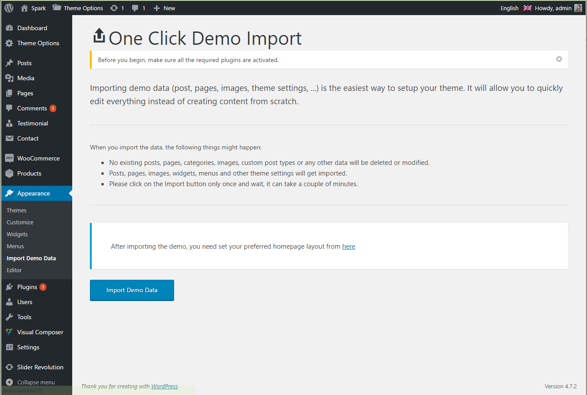
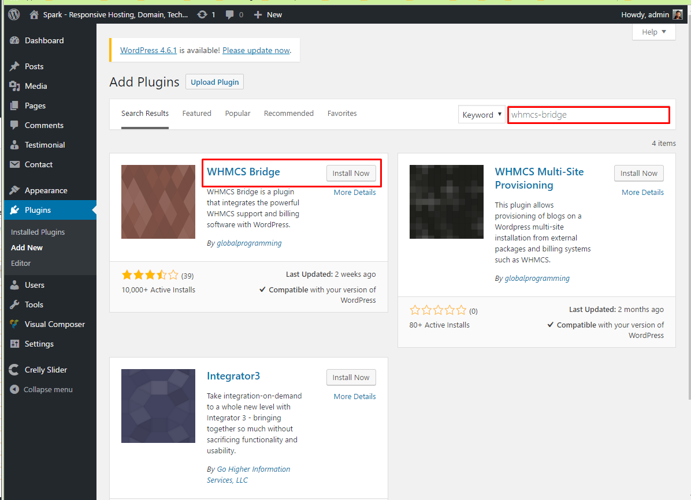
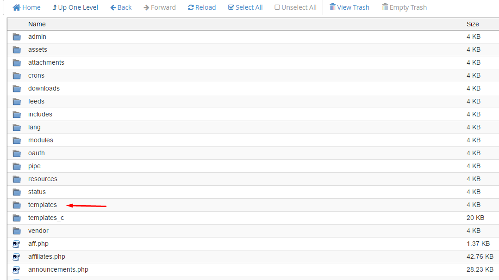
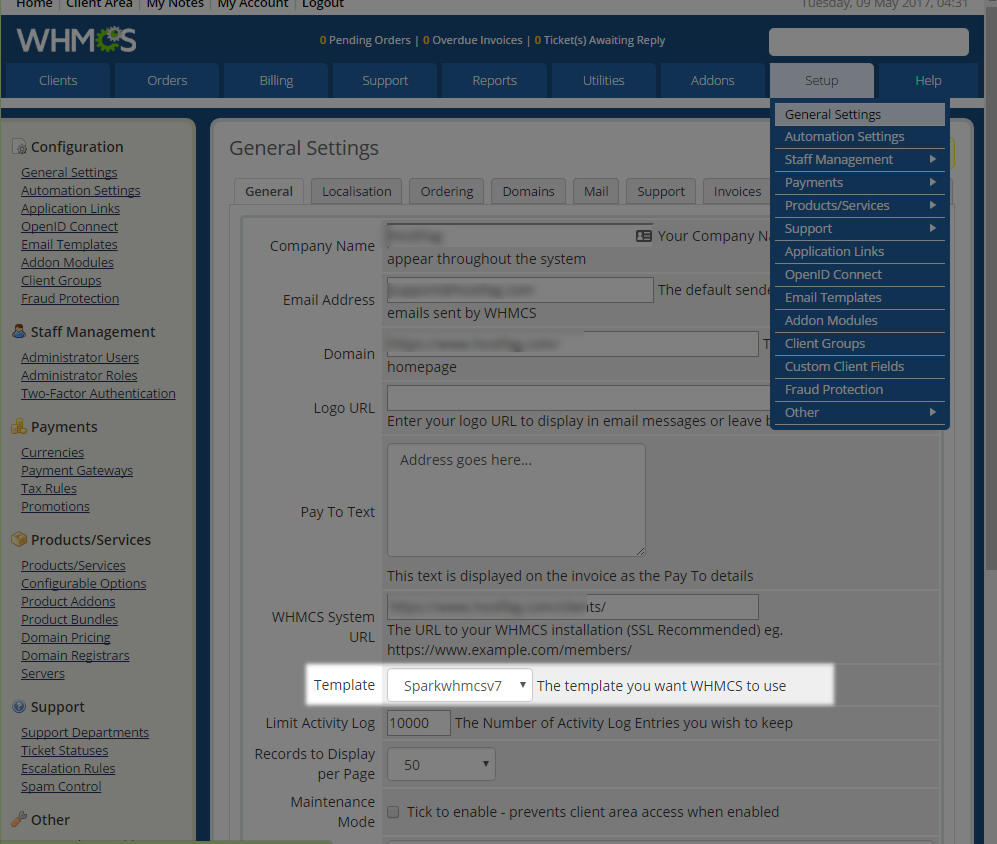
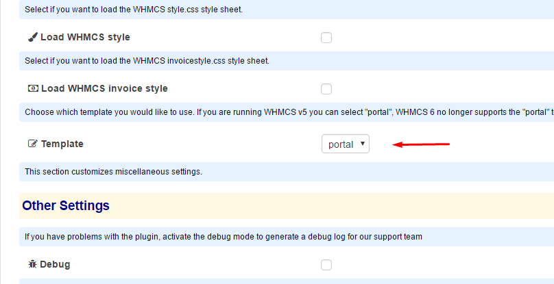
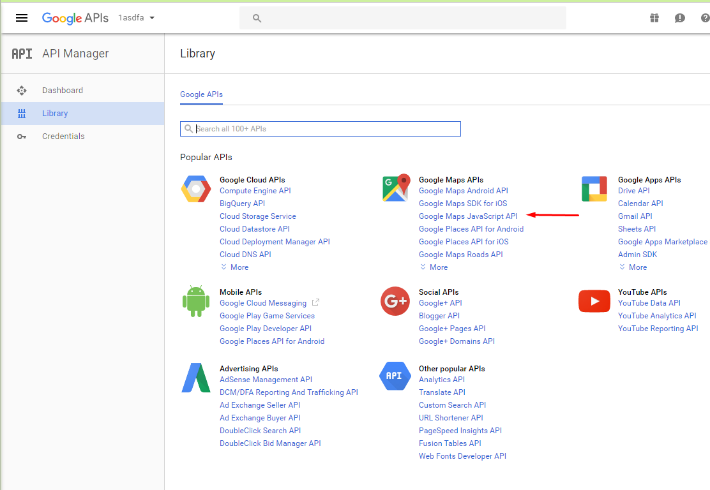
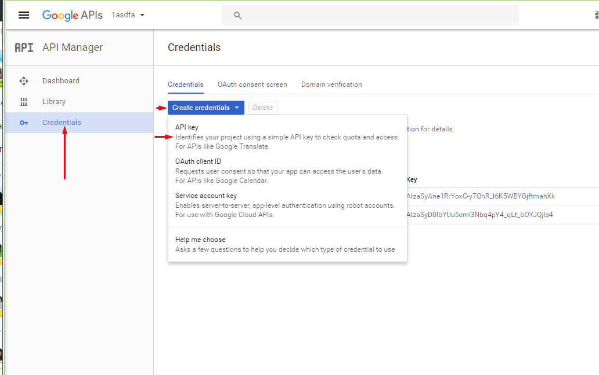
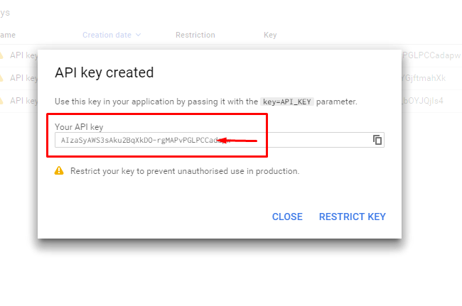
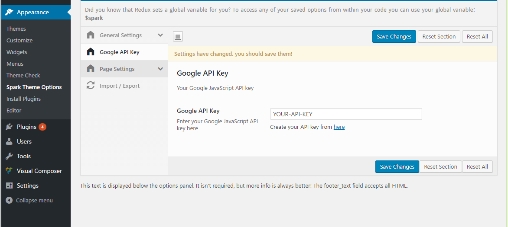

Domain & Hosting Management WordPress Theme
By Dhrubok
Thank you for purchasing our Product. In case of any questions or doubts, do not hesitate to contact us via out Themeforest profile . We will do our best to solve any problem concerning the project. At the same time we invite you to visit often our profile on ThemeForest since there will be appearing the improvements of our project and the newest actualization.
Spark is a Wordpress theme to create a website for domain hosting management system and anytype of website. Spark is a clean responsive WordPress theme comes with two header layouts. It includes premium wordpress plugin Visual Composer ( Worth $30 ) free with theme. The theme comes with the option of contact form to allow users to contact you.
Spark is fully compatible with latest version of Wordpress.
Right after the theme was activated, a notification at the top of the screen will suggest to continue with the installation of the plugins recommended for getting the best our of your theme.
Spark comes with one click demo installation exactly like the original demo. Now it becomes more easier to use than before. Just click on Import button and your demo site is ready.
In this video tutorial we show you how to download and install the WHMCS billing software.
After install successful, You also need install "WHMCS Bridge Pro" version.
1. Go to your WHMCS installation directory. You will see there's a "templates dir". Upload and unzip sparkwhmcs7.zip file there.
2. Then go to your WHMCS Admin panel. Navigate to to your Setup -> General Settings. And choose the sparkwhmcs7 template.
3. Now go to your WordPress Dashboard and navigate to Appearence -> Settings -> WHMCS Bridge Settings. And choose the portal template.
 And you're done :D CheersIf you are installing your theme from the WordPress theme installer, but get a message that says “Are you sure you want to do this?”, most likely your web server is configured with PHP settings that are too low to allow the theme ZIP file to upload.
Specifically, PHP is configured to a maximum file upload size limit at 8 megabytes or less. The theme ZIP is about 13.7 megabytes in size. Thus, the web server is rejecting the upload. WordPress is giving you a rather ambiguous message in response. This is not a theme fault or bug.
Recommended PHP configuration limits are as follows:
max_execution_time = 300
To setup the blog page, in your WordPress admin panel, navigate to Settings → Reading.
Assuming you already have a page named "Blog", for the Front page display, select "A static page" and choose your "Blog" page as the Posts page. This is what you should be seeing on your screen from left side.
To setup the home page, in your WordPress admin panel, navigate to Settings → Reading.
Assuming you already have a page named "Home", for the Front page display, select "A static page" and choose your "HOME page as the home page. This is what you should be seeing on your screen from left side.
To create a API key for your Google Map area go to this link https://console.developers.google.com/apis/library?project=asdfa-151623 and follow the screenshots to create your api key.
  In your Wordpress admin dashboard, navigate to Appearance → Spark Theme Options → Google API Key
That's all you have to do
In your Wordpress admin dashboard, navigate to Appearance → Spark Theme Options
Use Envato Marketplace plugin to receive automatic updates
Also,
When there's a new update available on Themeforest. Download the new updated theme. Then extract and upload new version from your dashboard Appearance → Themes.. Then activate the theme. During this process, your no website data will lost. Because all pages and posts data saves in Database.
Also after activating new theme, you needs to check that if there's any update available for Spark theme support plugin as well by visiting this page Appearance → Install Plugins.
If you need any help Feel free to contact with us at our Themeforest profile Dhrubok